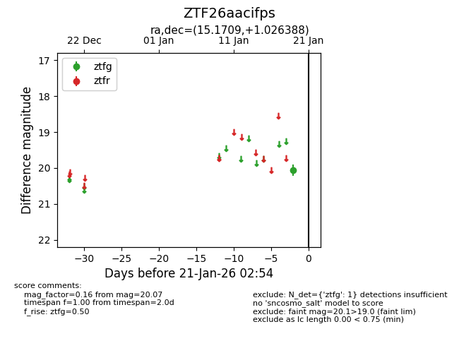
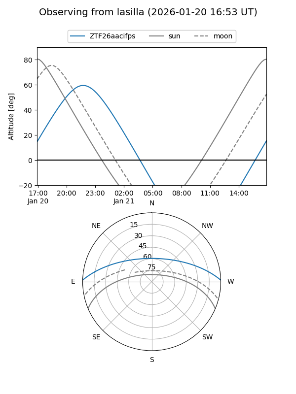
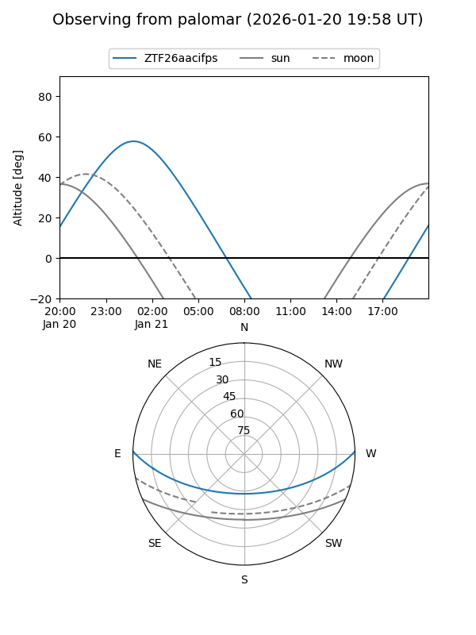

ZTF26aacifps
Target ZTF26aacifps at 2026-01-19 02:51
Aliases and brokers:
FINK: link
Lasair: link
ALeRCE: link
alt names
ZTF26aacifps (ztf,fink_ztf)
Coordinates:
equatorial (ra, dec) = 15.1709,+1.02639
equatorial (HMS+DMS) = 01:00:41.02,+01:01:35.00
galactic (l, b) = (127.8204,-61.75757)
Flags:
Photometry:
last ztfg=20.07
1 ztfg detections
Lightcurve

Visibility


Additional plots